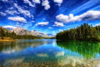

emoji at the Right
emoji at the RightThe natural world, as a whole or in a particular geographical area, especially as affected by human activity.
The things and conditions around a person or thing. example;"I took up the time admiring my surroundings"
*Internal environment.
*External macro environment.
*External micro environment

BACKGROUND,SETTING ENVIRONMENT, MILIEU, MISE-EN-SCÈNE .
BACKGROUND:
often refers to the circumstances or events that precede a phenomenon or development.
SETTING:
suggests looking at real-life situations in literary or dramatic terms.
ENVIRONMENT
applies to all the external factors that have a formative influence on one's physical, mental, or moral development.
MILIEU
applies especially to the physical and social surroundings of a person or group of persons.
MISE-EN-SCÈNE
strongly suggests the use of properties to achieve a particular atmosphere or theatrical effect.
Environment can be defined as a sum total of all the living and non-living element s and their effects that influence human life. While all living or biotic elements are animals plants, forests, fisheries, and birds, non-living or abiotic elements include water, land, sunlight, rocks, and air.
In realms of green and city's hum,
The term we speak, a total sum.
Nature's breath and urban sprawl,
In every context, it stands tall.
Beneath the skies and oceans wide,
A dance of life, a rhythmic tide.
Ecosystems dance, a delicate trance,
In the natural world, life's true romance
Always remember to keep the Environment neat and clean
Here is a quote from ecomena's website saying
Saving our planet, lifting people out of poverty, advancing economic growth… these are one and the same fight. We must connect the dots between climate change, water scarcity, energy shortages, global health, food security and women’s empowerment. Solutions to one problem must be solutions for all.
Ecomena goal is toprovides enough to satisfy every man’s needs, but not every man’s greed.

View from Ashton Park painted by Samuel Colman in 1822
Written by OLUWAPELUMI
The image below show the environment view

emoji at the Right
A happy face
Saving our planet
lifting people out of poverty
advancing economic growth… these are one and the same fight.
We must connect the dots between climate change
water scarcity
energy shortages
global health
food security and women’s empowerment.
Solutions to one problem must be solutions for all.